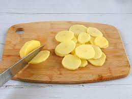
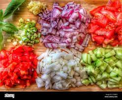
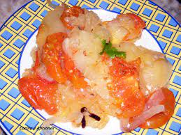
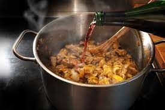
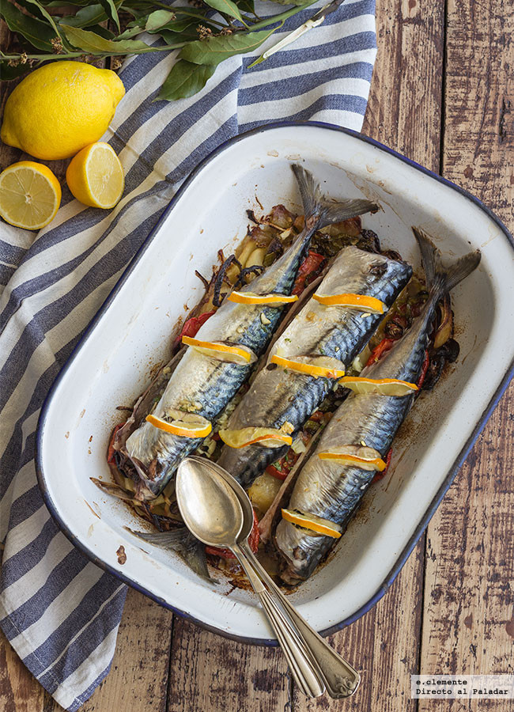

Como preparar paso a paso un Pescado Ahumado
Ingredientes
- 4 Caballas.
- 3 Tomates en rama.
- 2 Pimientos verdes italianos.
- 4 Patatas.
- 1 Cebolla.
- 2 Dientes de ajo.
- 130ml de Vino Blanco.
- 2 Limones
- Aceite de oliva virgen extra 50ml.
- Sal.
Pasos
- ¡Empezamos la receta de pescado al horno casero! Pelamos las patatas y las cortamos en rodajas finas.

- Lavamos y cortamos los pimientos y tomates en rodajas, la cebolla en láminas, y picamos bien los dientes de ajo.

- Engrasamos una fuente con una cuarta parte del aceite.
- Colocamos las patatas mezcladas con la cebolla, salamos y añadimos el tomate, el pimiento verde y el ajo picado, rectificamos de sal.

- Añadimos el vino, el zumo del limón y la mitad del agua, y horneamos durante 45 minutos, vigilando que no se queden las hortalizas secas.

- Colocamos el pescado, limpio, salado y con unas rodajas de limón y añadimos el resto del agua. ¡Horneamos durante 15 minutos y listo!¡Ya tienes tu pescado ahumado listo para saborear!
